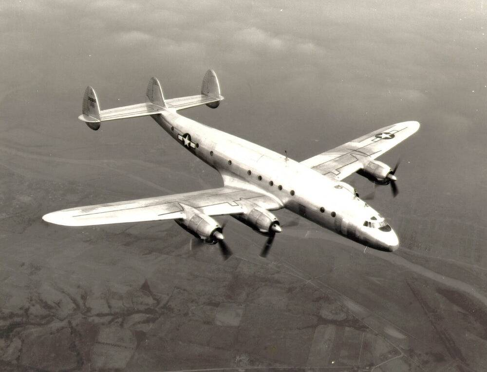
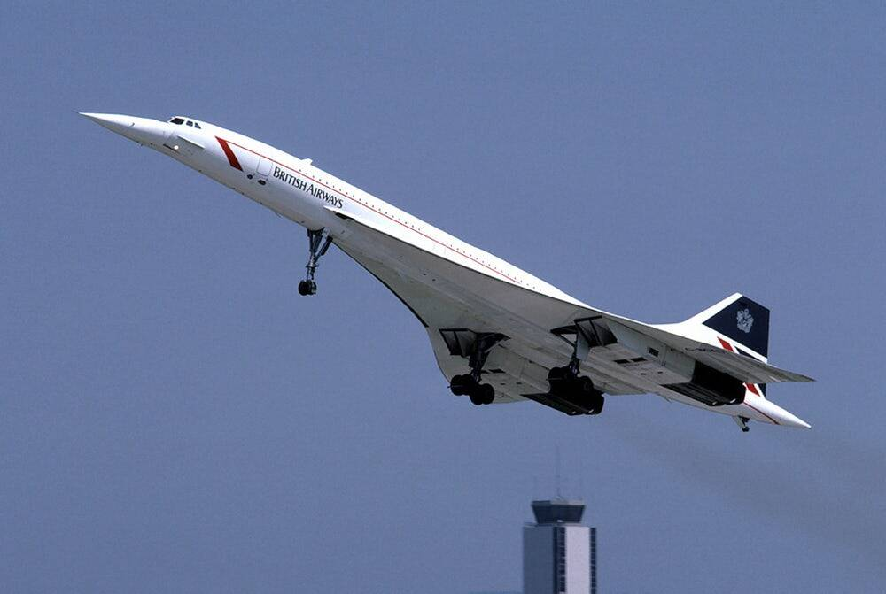

O impressionante Constellation, apelidada de Connie, foi concebida pela Lockheed Corporation em 1939 para atender as necessidades de um homem: o magnata das empresas Howard Hughes. O objetivo era construir um avião que, de acordo com o então engenheiro de pesquisa Kelly Johnson, “levasse mais pessoas mais longe e mais rápido do que nunca, e economicamente suficiente para ampliar a aceitação do voo como uma alternativa ao trem, navio e automóvel”. Foi construído entre 1943 e 1958, mas serviu até a década de 1990. Foi o primeiro avião a carregar o indicativo Air Force One, para o presidente Eisenhower. Na imagem está a versão militar C-69 da USAF, mostrando a cauda tripla inconfundível da Constelação.
Sua silhueta elegante está entre as mais reconhecidas na aviação. O Concorde foi o resultado de uma fusão de projetos simultâneos na Grã-Bretanha e na França, ambos trabalhando para desenvolver o primeiro avião supersônico. Concorde poderia cruzar mais de duas vezes a velocidade do som, reduzindo o tempo de vôo de Nova York para Londres a cerca de três horas. Um acidente catastrófico em 2000, seguido pelos eventos de 11 de setembro de 2001, estavam entre os últimos pregos do caixão da aeronave, que teve seu último voo em 2003. O último Concorde agora fica no museu aeroespacial Aerospace Bristol.
Retratado aqui em sua pintura dos Fuzileiros Navais dos EUA, o Grumman F7F Tigercat era um caça pesado que funcionou entre 1944 e 1954. Apesar de seu propósito pesado, Grumman projetou uma máquina bonita, que de alguma forma parece magra e musculosa ao mesmo tempo. A aeronave só viu o combate na Guerra da Coréia e, após o serviço militar, um pequeno número foi adaptado para combater os incêndios florestais entre as décadas de 1960 e 1980.

O hidroavião foi projetado e construído para a velocidade. Voando apenas entre 1931 e 1934, o avião experimental de fabricação italiana fez o que se propôs a fazer: tornar-se o avião mais rápido a voar. Com uma velocidade média de 709,2 km / h em três corridas, o recorde durou cinco anos. Continua a ser o mais rápido hidroavião monomotor a voar.

O P-51 Mustang da North American Aviation foi concebido como um avião de combate para os britânicos na Segunda Guerra Mundial, que estava de olho no Curtiss Tomahawk da América como substituto do Spitfire e do Hurricane. O Mustang ganhou renome como um lutador de escolta de longo alcance e por sua eficácia em ataques a instalações inimigas.